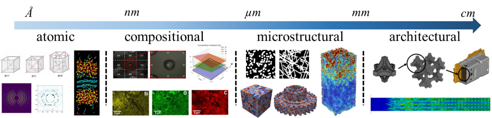

Generative materials design
Deep generative and graph-based models explore novel microstructures, metamaterials, and mechanical architectures.
Research Direction 02
Jointly designing materials, structures, and feasible realization pathways across multiple scales.

The Challenge
Designs optimized only in simulation can be difficult to realize or scale. Materials, geometry, process limits, and performance are tightly coupled, so feasibility must enter the design process from the beginning.
Our Approach
We combine generative AI with physics-based and data-driven representations of material behavior and process constraints. These models propose novel architectures, components, and process pathways while respecting target properties, compatibility, and experimentally informed limits.
Deep generative and graph-based models explore novel microstructures, metamaterials, and mechanical architectures.
Mechanics and materials physics constrain predictions and improve fidelity when training data are limited.
Process-structure-property-performance relationships connect decisions from composition and microstructure to system behavior.
Research Goal
The goal is a new class of design methods that produce high-performing, experimentally testable, and scalable material and mechanical systems.